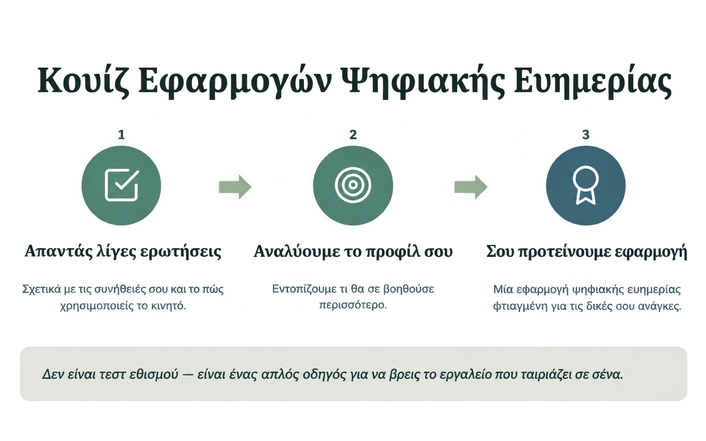

Τι είναι το digital wellbeing(ψηφιακή ευημερία);
Η ψηφιακή ευημερία αναφέρεται στη συνολική σχέση που έχει ένα άτομο με την τεχνολογία και τον ψηφιακό κόσμο. Δεν αφορά μόνο το πόσο χρόνο περνάμε μπροστά σε μια οθόνη, αλλά το πως, γιατί και με ποιο αποτέλεσμα χρησιμοποιούμε την τεχνολογία στη καθημερινή μας ζωή. Στη σημερινή εποχή που όλα είναι ψηφιοποιημένα η εύρεση της σωστής ισορροπίας είναι απαραίτητη. Είναι σημαντικό να αξιοποιούμε τα πλεονεκτήματα της τεχνολογίας αλλά παράλληλα να ελαχιστοποιούμε τα πιθανά μειονεκτήματα της στον άνθρωπο. Είναι σημαντικό να γνωρίζουμε ότι το περιβάλλον στο οποίο βρίσκεται ο χρήστης ψηφιακό ή πραγματικό επηρεάζει την ψυχολογία του και την συμπεριφορά του. Η ψηφιακή ευημερία είναι μια έννοια που αφορά όλους τους ανθρώπους ανεξαρτήτως ηλικίας, φύλου, κοινωνικής τάξης και επαγγέλματος. Είναι σημαντικό να γνωρίζουμε ότι η ψηφιακή ευημερία δεν είναι κάτι που επιτυγχάνεται μια φορά και για πάντα αλλά είναι μια συνεχής διαδικασία που απαιτεί συνεχή προσπάθεια και προσαρμογή στις αλλαγές της τεχνολογίας και της κοινωνίας.


Πως μπορείς να επιτύχεις ψηφιακή ευημερία;
Η επίτευξη ψηφιακής ευημερίας μπορεί να επιτευχθεί μέσα από τέσσερα βασικά βήματα. 1. Αξιολόγηση της τρέχουσας ψηφιακής ευημερίας Περιλαμβάνει μια λεπτομερής αξιολόγηση της ψηφιακής ευημερίας, ώστε να αποκτηθεί μια σαφής εικόνα της παρούσας κατάστασης. Στόχος είναι ο εντοπισμός των βασικών ζητημάτων και των πεδίων που χρειάζονται βελτίωση, με βάση τις ήδη υπάρχουσες πρωτοβουλίες ψηφιακής ευημερίας. 2. Προσδιορισμός δυνατοτήτων για μελλοντικές πρωτοβουλίες και ιεράρχηση προτεραιοτήτων Με βάση τα ευρήματα της αξιολόγησης, ιεραρχούνται οι τομείς που χρειάζονται άμεση προσοχή, λαμβάνοντας υπόψη τη σοβαρότητα κάθε ζητήματος και το κατά πόσο είναι εφικτή η αντιμετώπισή του. Έτσι η προσπάθεια εστιάζεται στα πιο κρίσιμα σημεία και μεγιστοποιείται η αποτελεσματικότητα. 3. Σχεδιασμός πρωτοβουλιών ψηφιακής ευημερίας και υλοποίησή τους. Στο επόμενο στάδιο καθορίζονται οι συγκεκριμένες πρωτοβουλίες που απαιτούνται για την αντιμετώπιση των ζητημάτων που έχουν εντοπιστεί, καθώς και η ερμηνεία τους. Η πιο αποτελεσματική προσέγγιση συνήθως συνδυάζει διαφορετικά στοιχεία, όπως εκπαίδευση, ευαισθητοποίηση, αλλαγή συμπεριφοράς και συνεργασία. 4. Αξιολόγηση του αναμενόμενου αντίκτυπου στην ψηφιακή ευημερία. Για τη διασφάλιση της συνεχούς βελτίωσης, είναι απαραίτητο να δημιουργηθεί ένας βρόχος ανατροφοδότησης που να επιτρέπει την αξιολόγηση και τον επαναπροσδιορισμό των παρεμβάσεων. Μια αναδρομική αξιολόγηση βοηθά στην κατανόηση των αλλαγών στις ψηφιακές συνήθειες, την ψυχική υγεία και την παραγωγικότητα, σε σύγκριση με τις αρχικές προσδοκίες πριν την υλοποίηση.
Πως σε βοηθάμε ώστε να επιτύχεις ψηφιακή ευημερία;
Σε καθοδηγούμε μέσα από τα ίδια τέσσερα βήματα που αναφέραμε προηγουμένως. Ξεκινάμε με την αξιολόγηση: Σύντομα θα προστεθεί ένα κουίζ το οποίο σού δείχνει πόσο εξαρτημένος/η είσαι από την τεχνολογία, ώστε να αποκτήσεις μια σαφή εικόνα της παρούσας κατάστασής σου. Παράλληλα, ο μετρητής χρήσης οθόνης σού δείχνει πόσο χρόνο περνάς καθημερινά στην τεχνολογία και τι άλλο θα μπορούσες να κάνεις αντ' αυτού. Τέλος, ένα δεύτερο κουίζ σε κατευθύνει, προτείνοντάς σου την εφαρμογή που ταιριάζει καλύτερα στις δικές σου ανάγκες, ώστε να προχωρήσεις με το κατάλληλο εργαλείο στον δικό σου δρόμο προς την ψηφιακή ευημερία.


